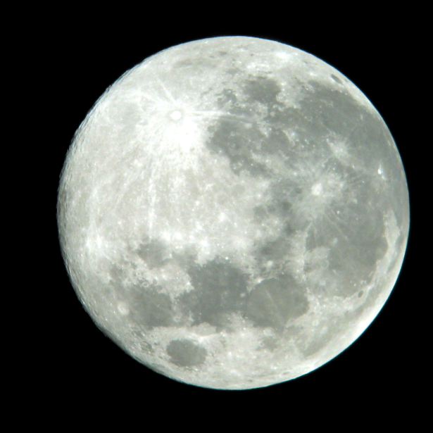
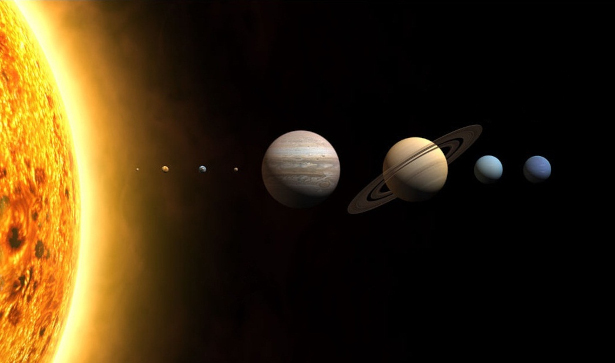
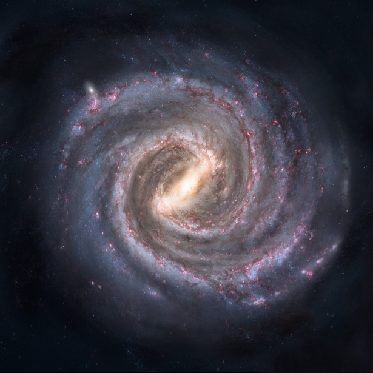

Um Viagem pelo espaço
A Lua
A lua é o único satélite natural do planeta terra, possuindo o seu corpo bem menor que o do planeta. A lua faz o movimento de rotação ao redor do seu próprio eixo, movimento esse que dura 28 dias, passando pelas 4 fases dela. Ela possui 4 fases, chamadas de lua cheia, lua minguante, lua crescente e lua nova, que duram cerca de 7 a 8 dias. Esse satélite natural também possui influência nas marés, que são provocadas pela força gravitacional dela, de um lado para o outro do planeta. Um fenônemo espacial que envolve a lua é o eclipse, fenômenos onde a lua, a terra e sol estão alinhados. O eclipse solar se dá quando a lua está entre o planeta terra e o sol, já o eclipse lunar ocorre quando a terra quem está no meio, entre a lua e o sol, apesar da lua possuir um tamanho menor que o sol, a diferença de distância das duas em relação a terra, dá a impressão de possuirem o mesmo tamanho. Assim como a terra e sol, a lua também faz parte do sistema solar.
Sistema Solar
O sistema solar é um conjunto de corpos celestes que circulam ao redor do sol. O sistema solar é composto por 8 planetas, mais 5 planetas anões. Os planetas são Mercúrio, Vênus, Terra, Marte, Júpiter, Saturno, Urano e Netuno, na mesma ordem de proximidade com o sol. Já os planetas anões são conhecidos como Ceres, Éris, Haumea, Makemake e Plutão, que até o ano de 2006 era considerado como planeta. Além desses planetas o sistema solar também possui vários outros corpos celestes como asteroides, meteoros, e satélites naturais como a lua. Além da lua que orbita o planeta terra, existem mais 200 catalogadas, sendo que 82 orbitam saturno, o segundo maior planeta do sistema solar. O planeta mais frio é Urano, o mais distante do sol, enquanto mais quente é Vênus, o segundo planeta a partir do sol. Os 8 planetas são divididos em gasosos e terrestres. Os gasosos são Júpiter, Urano, Netuno, e Saturno, já os terrestres são Mércuro, Vênus, Marte e Terra, onde vivemos.
Via Láctea
A Via láctea é uma galáxia que possui forma de espiral, na qual o sistema solar está localizado. Sua estrutura é formada pelo bojo, onde está o centro da Via láctea, o disco, que são os braços da galáxia que dão a ela o formato de espiral, e o halo, uma estrutura circular que envolve toda Via láctea. A Via láctea está em rota de colisão com outra galáxia, a Andrômeda, que é duas vezes o seu tamanho, estima que essa colisão deve ocorrer nos próximos 4 bilhões de anos. Assim como a terra, a via láctea também faz o movimento de rotação, durando 250 bilhões de anos para completá-lo. O planeta terra fica a 26 mil anos luz de distância do centro da Via láctea, local onde se encontra o buraco negro Sagitário A, que teve sua primeira foto divulgada em 2022.
Saiba mais
Segue uma lista de links para sites com mais informações sobre o espaço.
- Wikipedia sobre a Lua
- Toda Matéria sobre fases da Lua
- Mundo da Educação sobre a Lua
- Toda a Matéria sobre o Sistema o Solar
- Mundo da Educação sobre Sistema Solar
- Brasil Escola sobre o Sistema Solar
- Brasil Escola sobre a Via Láctea
- Wikipedia sobre a Via Láctea